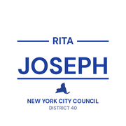

The district
 City Council
City Council State Senate
State Senate Congress
Congress Subway
Subway Citi Bike
Citi Bike NYC Ferry
NYC FerryTurn layers on and off. Tap an official's logo or a board's seal for its page. Zoning and land use lot by lot are on the land use map.
About
Assembly Member Monique Chandler-Waterman represents State Assembly District 58. It sits in Brooklyn.
The district overlaps community boards Brooklyn 17 and Brooklyn 18.
It is policed by the 67th and 69th Precincts.
It overlaps council districts 41, 42, 45 and 46 and Senate districts 19, 20 and 21.
Members of the State Assembly serve two year terms.
Next on the ballot in November 2026. Find your poll site and sample ballot there, or see what is coming up on the calendar.
Assembly District 58 in numbers
U.S. Census Bureau, American Community Survey 2019-2023 5-year estimates.
Bills
Committees
Contact
Overlap
Community boards


Bars show how many of the district's election districts fall in each board.
Overlapping elected officials





| Brooklyn CB 17 | 68% of the assembly district | 68% of it |
| Brooklyn CB 18 | 30% of the assembly district | 12% of it |
| Brooklyn CB 16 | 1% of the assembly district | 3% of it |
| 67 Precinct | 68% of the assembly district | 68% of it |
| 69 Precinct | 27% of the assembly district | 24% of it |
| 63 Precinct | 2% of the assembly district | 1% of it |
| 73 Precinct | 1% of the assembly district | 3% of it |
| Sector 67D | 22% of the assembly district | 84% of it |
| Sector 67E | 21% of the assembly district | 88% of it |
| Sector 67C | 17% of the assembly district | 93% of it |
| Sector 69A | 16% of the assembly district | 58% of it |
| Sector 69B | 11% of the assembly district | 38% of it |
| Sector 67B | 9% of the assembly district | 55% of it |
| Sector 63D | 2% of the assembly district | 12% of it |
| Sector 73D | 1% of the assembly district | 9% of it |
| School District 18 | 82% of the assembly district | 44% of it |
| School District 22 | 13% of the assembly district | 3% of it |
| School District 17 | 4% of the assembly district | 3% of it |
| School District 23 | 1% of the assembly district | 2% of it |
| Council District 45 | 37% of the assembly district | 29% of it |
| Council District 42 | 25% of the assembly district | 11% of it |
| Council District 41 | 20% of the assembly district | 23% of it |
| Council District 46 | 15% of the assembly district | 5% of it |
| Council District 40 | 4% of the assembly district | 5% of it |
| Senate District 19 | 49% of the assembly district | 11% of it |
| Senate District 21 | 39% of the assembly district | 17% of it |
| Senate District 20 | 13% of the assembly district | 7% of it |